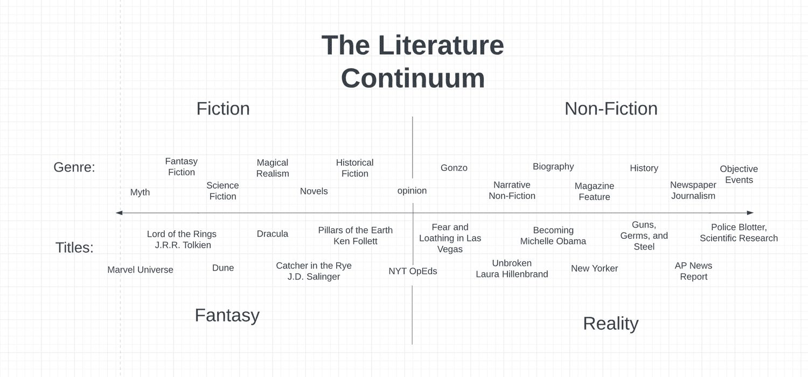

What is narrative nonfiction? How real is gonzo journalism? And how the heck did we come up with a word like "nonfiction" to describe books that are supposed to be true to reality?
A few years ago I heard a talk by the author and war correspondent Sebastian Junger that gave me a clue about why every book is first, and foremost, a complete invention of whomever was holding a pen. He said that no matter how talented you might be, "your words will never match the majesty of reality."
Today I posted a video that follows from this insight where I describe how closely different genres of literature come to reflecting the real world.
I also made a fancy chart that maps out most of the major genres from total make believe all the way over to as objectively real as possible that I call the "Literature Continuum."

Below that I've made links to all of the books that I mention in the video in case you are looking for your next great read.
Books by Genre
Tribe by Sebastian Junger
The Perfect Storm by Sebastian Junger
HISTORY
Guns, Germs and Steel by Jared Diamond
MEMOIR & BIOGRAPHY
Becoming by Michelle Obama
NARRATIVE NONFICTION
Unbroken by Laura Hillenbrand
The Vortex by Scott Carney & Jason Miklian
What Doesn't Kill Us by Scott Carney
GONZO:
Fear and Loathing in Las Vegas by Hunter S. Thompson
Fear and Loathing on the Campaign Trail of '72 by Hunter S Thompson
HISTORICAL FICTION
The Killer Angels by Michael Shaara
The Pillars of the Earth by Ken Follett
NOVELS
Catcher in the Rye by J.D. Salinger
Old Man and the Sea by Ernest Hemingway
Black Boy by Richard Wright
MAGICAL REALISM
Dracula by Bram Stoker
SCIENCE FICTION
Children of Time by Adrian Tchaikovksy
Dune by Frank Herbert
FANTASY
Name of the Wind by Patrick Rothfus
The Wizard of Earthsea by Ursula Le Guin
MYTH
The Epic of Gilgamesh by Ancient Sumeria
The Marvel Encyclopedia by Stan Lee
Lastly, thanks as always to video editor Ron Perron!